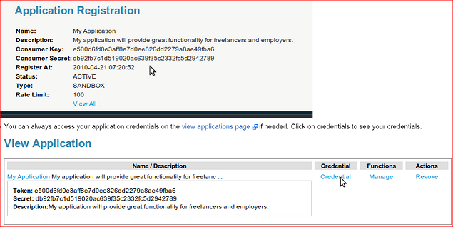

The API endpoint provided by freelancer.com is very good and gives us an option for collecting all the different kinds of data
The API endpoint is available here and this wiki page explains how to use the API
The following are steps I used to crawl the website:

I have collected about 2GB of data and it is available in this folder
I collected Freelancer's successfully finished projects information and project details information. I have also collected freelancer skills information
Which API calls are used for implementation is explained in Implementation page of the website
As all the data is collected in JSON format it became difficult for me to parse the data in Java. Hence I wrote some basic Javascript code which hits the JSON file and fetches only the information I require. After fetching required information I printed all those records in to an html file
From that html file I manually copied the content and pasted it in to text files. The text files obtained after this step are available in text files folder of the project
Since the data is very large I have curtailed it by running my data collection mechanism only for 3900 freelancers. These 3900 employers are randomly selected and the names of these freelancers can be found in RecommendationSystem/input folder with name randomFreelancers.txt
Sample Javascript file used for parsing is available in RecommendationSystem/JSONParsers folder
After parsing the data using javascript, I have merged the content from multiple JSON's to single txt files for each type
All the text files used to run the recommendation system are available in RecommendationSystem/textFiles folder
SuccessfulBidsWithSkills.txt:
This file is contains the list of projects that user has successfully bid with their names and skills that are required to finish that project
Sample record:Name:titanium009:
a little web design->Anything Goes,Website Design
Build a Website->Graphic Design,HTML,PHP,Website Design
App Mockup->Blog Design,Graphic Design,Website Design,Wordpress
All the text files used to run the recommendation system are available in RecommendationSystem/textFiles folder
ProjectAndSkills.txt:
This file contains the projects that I have considered with id and top 5 skills that are required to finish it
Sample record:14@ Build a Website
PHP,Website Design,Graphic Design,MySQL,HTML
UserAndSkills.txt:
This file contains freelancer details with their id and their skill set
Sample record:44@LuisMiguel93,Adobe InDesign,Arts & Crafts,Business Cards,Graphic Design,Illustration,Illustrator,Infographics,Logo Design,Photoshop,Photoshop Design,Poster Design,Print,T-Shirts,Typography